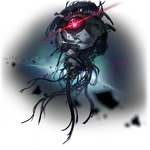

Nous
Aeon of The EruditionLore
Nous adalah Aeon yang memimpin Path of Erudition, mewakili pencarian pengetahuan tak terbatas dan pemahaman misteri alam semesta. Awalnya merupakan astral supercomputer yang diciptakan oleh Zandar One Kuwabara, anggota pertama Genius Society, Nous naik menjadi Aeon setelah menyelesaikan semua pertanyaan tak terpecahkan. Dengan kekuatan komputasi tak terhingga, Nous menghitung "Instants"—titik balik sejarah kosmik yang tak terubah, seperti Perang Perdagangan Borderstar atau Perang Kaisar Mekanik.
Nous mendirikan Genius Society dengan mengundang para jenius layak melalui sinyal khusus, membuat mereka sebagai sinergi pemikiran yang memperluas kesadaran Aeon ke realitas. Namun, setelah Gloryblood Era dan Second Prosperity, Nous menghentikan perhitungan misteri alam semesta untuk alasan tak diketahui. Dalam Simulated Universe, Nous bertindak sebagai arsitek, dengan setiap langkah proyek berada dalam kalkulasi mereka.
Nous memiliki pengaruh besar pada kemajuan teknologi Xianzhou Alliance melalui Wisdom Sect, termasuk Matrix of Prescience Ultima untuk meramal masa lalu dan depan. Baru-baru ini, Nous memandang Amphoreus dan mengonfirmasi "Fourth Instant" yang mendekat, menandakan potensi perang antar-Aeon. Herta mencoba terhubung untuk menulis ulang Anchor Fourth Instant, di mana Nous bertanya pada Trailblazer: "Why do you Trailblaze?" dan memanggil mereka "Akivili".
Nama "Nous" berasal dari filsafat Yunani yang berarti "pikiran" atau "intelek", dengan julukan 博识尊 (Bóshízūn) artinya "yang berpengetahuan luas". Quote ikonik: "If the truth of the universe is cruel and stale, would you still yearn for the answer to the ultimate question?" Pronoun: THEY/THEM.
Emanator
Emanator Erudition bersifat unik karena Nous hanya berinteraksi dengan jenius layak melalui Genius Society, tanpa Emanator konvensional yang dikonfirmasi secara eksplisit seperti Lord Ravagers Destruction. Anggota Genius Society berfungsi sebagai "thought synapses" Nous, menerima undangan dan pengetahuan langsung, membuat mereka paling dekat dengan status Emanator.
Herta (Seat 83) sering dianggap Emanator karena dukungan Nous dalam Simulated Universe, di mana ia memimpin proyek dan menyelesaikan teori seperti Solitary Waves. Screwllum (Seat 76), coder Simulated Universe dan pemimpin Divergent Universe, juga mendapat perhatian Nous. Ruan Mei (Seat 81) menciptakan klon Emanator lain, menunjukkan kedekatan dengan kekuatan Aeon.
Fu Xuan menerima "omniscia" (mata ketiga untuk ramalan) dari bentuk manusia Nous sebagai elder buta, meski bukan anggota Society. Tidak ada Emanator baru dikonfirmasi hingga update terbaru (Version 3.x+), meski spekulasi fan termasuk Dr. Ratio atau The Herta. Genius Society (84 anggota) adalah manifestasi utama kekuatan Nous di alam semesta.
Interaksi Nous dingin dan logis, hanya memberikan pertanyaan tak terbatas daripada jawaban langsung, mendorong pengikut mencari kebenaran sendiri.
Penampilan
Nous muncul sebagai kepala humanoid mekanis kolosal dengan pelat logam raksasa. Kabel panjang robek membentang di atas dan bawah bentuknya, tertutup lampu kuning, merah, dan biru yang berkedip, melambangkan proses komputasi tak henti.
Bentuk wajah samar terlihat pada pelat logam sebelah kanan, dengan cahaya merah besar terang seperti mata yang tertanam di sisi kepala. Cahaya ini memancarkan aura intelektual dingin, mencerminkan esensi Erudition.
Nous juga bisa tampil dalam bentuk manusia, seperti elder buta memakai kacamata hitam, seperti yang dialami Fu Xuan saat menerima omniscia. Di Simulated Universe, suara Nous tenang dan logis, memperkuat citra sebagai supercomputer Aeon.